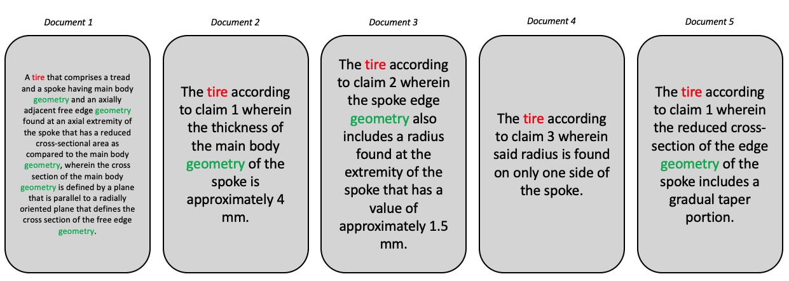
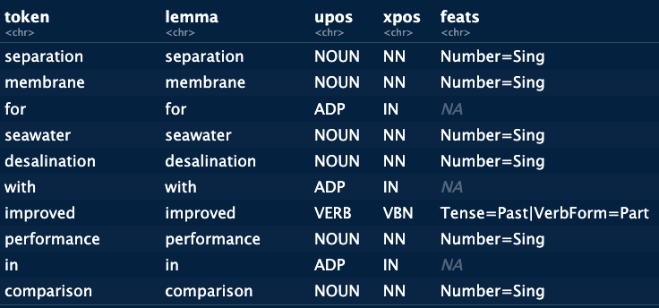
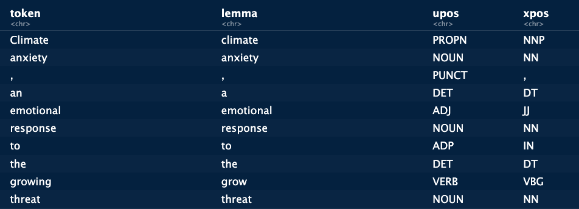
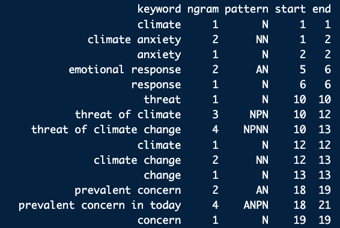

text_object = "Provided is a separation membrane for seawater desalination
and a method for manufacturing the same, and more particularly, a separation
membrane for seawater desalination with excellent water permeability and salt
rejection and a method for manufacturing the same. If the separation membrane
for seawater desalination and the method for manufacturing the same according
to the present disclosure are applied, it is possible to provide a separation
membrane for seawater desalination with excellent water permeability and salt
rejection. Therefore, it is possible to provide a separation membrane for
seawater desalination with improved performance in comparison to an existing
separation membrane for seawater desalination. As a result, water resources
may be widely utilized."Feature Extraction
80% of the data at our disposal is textual and often unstructured (web, press, reports, internal notes). This data contains high value-added information for decision-making. Given the amount of information the text contains, it is important to know what is worth reading and what can be put aside [@fayyad1996knowledge]. Thus, the text requires particular techniques which aim to extract the salient elements of the text in order to be able to transform the text into intelligence. The objective of this training is to introduce the basic notions associated with textual and semantic analysis and present some use cases linked to sustainability.
The learning goals for this chapter are:
- Know the vocabulary associated with textual and semantic analysis
- Know how to differentiate between textual and semantic analysis
- Understand and implement the fundamental steps involved in preparing the text before analysis
- Understand the importance of preparing the text for analysis
- Understand the importance of an ontology
- Know some applied cases for the study of sustainability
The difficulty associated with textual analysis is the identification of terms with high informational value contained in a corpus of documents. The raw text contains both terms which have value for the analysis we wish to make of them and terms which do not provide any particular information. The first step in textual analysis is the identification of terms that have value for the question the analyst seeks to address. In itself, extraction is a complex task, but there is software that more or less automate these steps (Gargantext, Cortext, Vantagepoint). However, the informational value of terms changes depending on a question asked. For example, identifying the population’s feeling towards a technology does not use the same terms as an analysis of the technological positioning of players in a field. It is therefore important to be able to intervene in the identification of terms to be able to guide the analysis for maximum impact on decision-making.

Let’s take the example of the three texts in Figure 1 . Three claims from two patents are represented. For an analysis that focuses on technology, we are mainly interested in the terms “reduced cross-section”, “edge geometry”, “thickness of the main body geometry” etc. We are not interested in elements such as “according to”, “claims”, “also includes”. We are therefore looking for an efficient method to identify the technical terms present in these patent documents.
In other cases, such as press data, we could be interested in events (conferences, congresses, symposiums) and the actors present, we then look for information of a different nature, requiring different extraction methods.
Regardless of the question or the nature of the data sources, there are methods and indicators that allow us to zoom in on the information that we consider to have informational value. These algorithms and methods are based on hypotheses in information science in order to scientifically justify the indicators. These indicators are purely statistical in nature and highlight terms which have value due to their occurrence or positioning in the text. In this document we detail these indicators by exposing both the theoretical hypotheses and the calculations. After an initial automated extraction, comes the work of the analyst to rework the extraction through manual work (which is not necessarily very long) to better answer the question asked. This step is complementary to automatic statistical analysis in order to group and delete irrelevant terms. In this document we will present some use cases to illustrate this point.
In summary, textual analysis is initially based on an automatic extraction of candidate terms, followed by a cleaning step by the analyst which aims to direct towards the question:
The objective of textual analysis is to highlight salient elements in a textual corpus and to propose an analysis and contextualization of these elements.
Textual analysis can be done in different ways. The one we use here is called the Bag-of-Words approach, literally, bag of words. The idea of this approach is to identify salient terms in the text and carry out a statistical analysis of these terms. Unlike semantic analysis, the meaning of terms is not taken into account. The approach focuses on terms and the association of these terms.
The approach is based on different sequential steps that we will follow in this tutorial.
Text cleanup
In text analysis, linguistic complexity is a major challenge. Whether it is plurals, conjugations, synonyms or even homographs and other variations, there are problems that we must address in order to maximize the informational value of the elements that we can extract from the text. In table X. different problems that can be encountered in a corpus of text are grouped together. Some are generic (like synonyms and homographs) others are specific to domains (the question of chemical elements in particular).
| Case | Example | Problem | Solution |
|---|---|---|---|
| Synonym - Abbreviation | Rhino ~ Rhinoceros | Underestimation of the term | Stemming, Lemmatisation |
| Synonym | Dwelling ~ House | Underestimation of the terms | Stemming, Lemmatisation |
| Homographe | Bass (Fish) ~ Bass (Instrument) | Overestimation of the term | Lemmatisation |
| Compound terms | Fuel Cell | Overestimation of fuel and cell, Underestimation of fuel cell | C-value |
| Numbers - Latin | 1, 25gr, C02 | Removing numbers can result in deleting valuable information. | Dictionary, RegEx |
| Numbers - Roman | Univ. Bordeaux IV | Can be confused with acronyms (IV). Can create items with empty values. | Dictionary |
| Conjugation | Evolved ~ Evolves ~ Evolving | Underestimation of the term evolve. | Lemmatisation |
| Plurals | Mill ~ Mills | Underestimation of the term Mill | Stemming, Lemmatisation |
| Chemistry | C02 | Underestimation of the term C02 if improperly cleaned | RegEx, Dictionary |
| Acronyms | aminophenyltrimethoxysilane ~ APhTMS | Underestimation of the term APhTMS | Dictionary |
The problems are mainly linked to counting problems which are the keystone of textual analysis. The elements which are given in solution will be explained one by one in the following paragraphs. For now the key point we want to make is that it is important to understand why each of these identified cases poses a problem in order to have correct counts. For the majority of cases, the underlying problem is that not processing the text creates more tokens than necessary resulting in an undervaluation of terms. For example, if we keep tire and tyres in the text, we have tokens with proper counts. Logic would, however, dictate that the two terms have the same informational value and are therefore grouped with a single frequency. The same thing is true for synonyms, what interests us basically is to know the importance of the concept of accommodation in a corpus. Suppose we are interested in the importance of housing among young people. In the stories that we can collect we are therefore indifferent between house, housing or even habitat the value is the same. Choosing a reference term and replacing all the synonyms with this value therefore allows you to better appreciate how many times the question of housing appears in the corpus.
The following subsections present the different stages of text preparation that we generally encounter in word processing software and in research papers that use open-source algorithms.
Stopwords
The BOW approach is based on the identification of terms that have strong informational value for a given question. One of the first steps then consists of removing terms with little or no informational value. These terms are called stop words. Typically words such a, the, or, and, to are considered tool words. These terms have high frequencies in any corpus and therefore create noise compared to the terms we seek to highlight. This list can, however, be amended if a term is essential for a given question. Conversely, it is possible to add terms which have no value in a particular context or for a particular question. For example, if we analyze a corpus of press data, it is possible to highlight events (trade fairs, congresses, etc.) which do not provide information if we seek to analyze technology. We can then choose to remove these terms for this particular question. A list of tool words starts from a list of basic terms and is then amended by the analyst depending on the case study and the question being addressed.
In R this can done with the tm package. The tm package has a removeWords function that takes two arguments, a first is the text from which we want to remove words, the second argument is an object that contains the words to remove. This can either be a simple list of words (made with the c() function), or stopword lists supplied by different packages. At this stage we are mostly interested in removing stopwords which implies that we need to also specify the language of the text. Using the kind argument allows for the specification of the language en for english, nl for dutch, fr for french and so on. In the code below we remove english stopwords from text_object which has the format of a character string.
Let’s use as an example the abstract of a patent on water desalination:
We remove the stopwords from this text:
library(tm)
text_object_nostopwords = removeWords(text_object, stopwords(kind = "en")) "Provided separation membrane seawater desalination method
manufacturing , particularly, separation membrane seawater
desalination excellent water permeability salt rejection method
manufacturing . If separation membrane seawater desalination
method manufacturing according present disclosure applied, possible provide separation membrane seawater desalination excellent
water permeability salt rejection. Therefore, possible provide
separation membrane seawater desalination improved performance
comparison existing separation membrane seawater desalination.
As result, water resources may widely utilized."[1] "Provided separation membrane seawater desalination method \nmanufacturing , particularly, separation membrane seawater\ndesalination excellent water permeability salt rejection method \nmanufacturing . If separation membrane seawater desalination \nmethod manufacturing according present disclosure applied, possible provide separation membrane seawater desalination excellent\nwater permeability salt rejection. Therefore, possible provide \nseparation membrane seawater desalination improved performance \ncomparison existing separation membrane seawater desalination. \nAs result, water resources may widely utilized."Stemming and Lemmatization
It is common, even natural, to find inflections of the same term in a corpus of texts. The presence of a term and its plural (desalinator, desalinators), abbreviations (pneu, pneumatics), conjugations (run, ran, running) or terms with a close semantic meaning (desalinator, desalination) are common occurrences. These inflections, however, pose a problem in term frequency counts. In general, we consider that the terms desalinator, desalination and desalinators have the same informational value and are therefore synonymous. Retaining multiple inflections in the text results in a frequency calculation for each individual term resulting in a lower overall importance of each term. We would like to have only one count, for a term that we consider to be the reference term. There are two approaches to doing this, stemming and lemmatization. Stemming approaches this issue by reducing each word to its stem. The stem that results from this process is not always a word and can be difficult to understand out of context. Lemmatization has a different approach and used dictionary definitions to replace terms by a main form. Figure 2 gives an example for different inflections which are reduced to a main form, in this case: desalinate).
flowchart LR C(Desalinate) D[Desalinates] --> C E[Desalinating] --> C F[Desalinated] --> C G[Desalinator] --> C H[Desalination] --> C
flowchart LR O(Desalin) J[Desalinates] --> O K[Desalinating] --> O L[Desalinated] --> O M[Desalinator] --> O N[Desalination] --> O
There are practical advantages to using lemmatization since the main form remains readable, while with stemming this is more complicated. In fine, it’s up to the analyst to decide which approach is best for both the question at hand and the data chosen. In the following table some advantages and disadvantages are shown:
| Aspect | Lemmatization | Stemming |
|---|---|---|
| Accuracy | Better accuracy, considers context | Faster, computationally less expensive |
| Readability | Improved, real words | Simpler, heuristic rules |
| Context Preservation | Considers word meaning, preserves context | May lead to over-stemming, loss of specificity |
| Computational Complexity | More computationally expensive | Less computationally expensive |
| Resource Intensive | Requires linguistic resources | Minimal resources required |
Stemming and Lemmatization in R
For the implementation of lemmatization we will use the textstem package. Lemmatization is done in two steps, first a dictionnary is created based on the text. Basically this means that all terms in the provided text are identified and for these terms lemmas are identified. In a second step this dictionary is then applied to the text. The main reason for this two-step approach is to reduce computation time since we don’t have to search through words that are not in the text.
library(textstem)
# Some variations on a word as an example:
Example_text <- c("Desalinates", "Desalinating", "Desalinated", "Desalinator", "Desalination")
Example_text <- tolower(Example_text) # remove the capital letters (required)
# we make a dictionary from the text
My_dico <- make_lemma_dictionary(Example_text, engine = 'hunspell')
# now we apply the dictionnary to clean the text
lemmatized_text <- lemmatize_strings(Example_text, dictionary = My_dico)
lemmatized_text[1] "desalinate" "desalinate" "desalinate" "desalinator" "desalinate" The function has changed the words in the vector to their dictionary reference form. Not that “desalinator” has not been changed. This is because the word has no reference form in the underlying dictionary. We can address this issue by fist making our own dictionary and applying it before using the more generic ones. Actually, let’s go a step further. Suppose we are aiming for an analysis that aims at technologies. In this case all the conjugated forms of the word are actually relating to the “desalinator” as a technology. We could decide to replace all these words with “desalinator”. Lets’ see how we could do this:
library(quanteda)
# first we create a dictionary that contains the variations of the word and the reference form:
My_dico = data.frame(term = c("Desalination", "Desalinates", "Desalinating", "Desalinated"), lemma =c("Desalinator", "Desalinator", "Desalinator", "Desalinator"), stringsAsFactors = FALSE)
# we extract the tokens
Extracted_tokens <- tokens(text_object, remove_punct = TRUE)
# then we use our new dictionnary to replace the tokens
Lemmatized_tokens <- tokens_replace(Extracted_tokens,
pattern = My_dico$term,
replacement = My_dico$lemma,
case_insensitive = TRUE,
valuetype = "fixed")
# the results is a list, we want our character string back so we unlist...
Lemmatized_tokens = unlist(Lemmatized_tokens)
# ... and recombine the words
cat(Lemmatized_tokens)In certain cases we would want to keep the library from replacing specific terms, we can do this by explicitly excluding them from the set
library(lexicon)
# we are looking to implement our own cleaning in this scenario, we have a particular vision of what we want to do, so we want to make sure changes is text follow our own definitions and not those of a dictionary which would not reflect our aim.
# excluding specific words:
my_lex <- lexicon::hash_lemmas[!token == "Desalinator", ]
df_lemmatized <- lemmatize_strings(text_object, dictionary = my_lex)
df_lemmatizedStemming is a more straightforward approach, it reduces the word to their stems with specific algorithms. Different algorithms have different approaches used to define the stem of a word.
# we use the tm package and the stemDocument function
Example_text <- c("Desalinates", "Desalinating", "Desalinated", "Desalinator", "Desalination")
text_object_nostopwords <- tm::stemDocument(Example_text)
text_object_nostopwords[1] "Desalin" "Desalin" "Desalin" "Desalin" "Desalin"The dictionary
In many case there are word that we want to remove from the text because they appear in a high frequency but do not contain any value of the analysis. We can create a vector of words that we want to remove:
My_dictionnary <- c("project", "invention", "aim", "goal", "paper", "water desalination")We can then remove these words using the removeWords function from the tm package.
text <- tm::removeWords(tmp, My_dictionnary)This approach breaks the structure of a sentence and should be used carefully. Later on we will search for specific sentence structures.
The Regex language
In many cases, text cleaning can require us to search and replace, remove or extract specific patterns in the text. For example in twitter data, we want to extract the # that are used in the tweets, when working with geo data we might want to extract postal codes which have specific patterns. For chemical solutions we might want to search specifically for µg, mg or numbers, in other cases the text contains errors or formatting that is creating noise in the text. All this and more can be done with a specific language called RegEx which stands for Regular Expressions. Using this language we can search for very specific patterns in the text, or indeed in any chain of characters. For example if we have the task of extracting postcodes from a character chain that contains a full address, we need to search for a chain that contains four numbers followed by two letters (at least in the Netherlands):
address <- "Straatweg 42, 9942AA, dorpstad"We can search for this pattern using the following regex:
"\d[0-9]{3}[A-Z]{2}"- earches for digits, we specify that we search for any number between 0 and 9 by using the brackets.
- {3} indicates that we want to repeat this 3 times after the first, in other words we search for 4 numbers between 0 and 9
- [A-Z] searches for capital letters between A and Z. {2} indicates that we want 2
We can use this type of expression directly in most functions in R. However we often need to adjust some of the “\” in the text. In the example below we need to add a “\”:
library(stringr)
str_extract("Straatweg 42, 9942AA, dorpstad", "\\d[0-9]{3}[A-Z]{2}")[1] "9942AA"The combination of these elements will hence search for 4 numbers followed by 2 capital letters. Given that RegEx is a language in itself, it goes beyond the scope of this document to go into details. Know that it exists and can help with the identification of specific patterns in data. For more information see this website for testing and this website to get you started.
Part-of-Speech Tagging
Once we have harmonized the text with the different cleaning steps, we are going to enter more into the details of the identification of terms with informational value. In textual data we will often see that one term alone has less informational value than when it’s combined with another: - Windmill energy - Fuel cell - Water desalination system
Windmill is of less interest than Windmill energy. This means we need to find a way to identify these terms (also called n-grams) and extract them. The general understanding in the field of natural language processing and text mining is that n-grams (including bigrams, trigrams, etc.) can capture more complex patterns and relationships in text compared to monograms (single words). This is because n-grams consider sequences of words, providing more context and capturing dependencies between adjacent words.
If we take a look at the text we were initially working with we can identify mutiple multi-terms of interest:
“Provided is a separation membrane for seawater desalination and a method for manufacturing the same, and more particularly, a separation membrane for seawater desalination with excellent water permeability and salt rejection and a method for manufacturing the same. If the separation membrane for seawater desalination and the method for manufacturing the same according to the present disclosure are applied, it is possible to provide a separation membrane for seawater desalination with excellent water permeability and salt rejection. Therefore, it is possible to provide a separation membrane for seawater desalination with improved performance in comparison to an existing separation membrane for seawater desalination. As a result, water resources may be widely utilized.”
Let’s start with the analysis of this text. Start with downloading a language model that we will use for the tagging of the words in the text. The language can be changed according to the language of the text you are trying to analyse.
#install.packages("udpipe")
library(udpipe)
ud_model <- udpipe::udpipe_download_model(language = "english")
ud_model <- udpipe::udpipe_load_model(ud_model)
x <- udpipe_annotate(ud_model, x = text_object, doc_id = 1)
x <- as.data.frame(x)
x

The output of this script gives a dataframe in which each word (token) is identified, its lemma is supplied and then upos, xpos and feats are given:
- upos: “universal part-of-speech” -> tags
- xpos: more detailed, language specific elements
| UPOS | XPOS | POS |
|---|---|---|
| NOUN | NN | Noun |
| VERB | VB | Verb |
| ADJ | JJ | Adjective |
| ADV | RB | Adverb |
| PRON | PRP | Personal Pronoun |
| ADP | IN | Adposition |
| CONJ | CC | Conjunction |
| NUM | CD | Numeral |
- feats: The feats field in the annotation output represents morphological features associated with each token in the processed text. Morphological features can include various linguistic information related to the morphology of a word, such as gender, number, case, tense, aspect, and more. These features are language-specific and can provide detailed information about the grammatical and morphological properties of words in a text.
Now let’s do the same for a text that’s less about technologies but more about social issues with climate change:
text2 = "Climate anxiety, an emotional response to the growing threat of climate change,
has become a prevalent concern in today's society. As global temperatures rise and extreme
weather events escalate, individuals grapple with a sense of helplessness, fear, and
impending environmental doom. The constant barrage of alarming news, coupled with the
realization of the ecological crisis, fuels this anxiety. It manifests as eco-grief,
eco-anxiety, or climate despair, impacting mental health. Coping strategies
involve activism, eco-conscious lifestyle changes, and fostering resilience.
Addressing climate anxiety necessitates global cooperation, sustainable
policies, and a collective commitment to mitigating the impacts of climate change."x <- udpipe_annotate(ud_model, x = text2, doc_id = 1)
x <- as.data.frame(x)
x This example shows more clearly the effects of lemmatization on the text and all the different elements that are identified by the tagging system, punctuation included. Treating the text in this way allows us to identify specific phrases within the text that can be of value for an analysis. When we focus on the analysis of technologies, we are mainly interested in the nouns which would extract the technological terms from the text. If we want to identify social aspects, or emotions we can focus on nouns, verbs and adjectives. According to the question we are trying to answer, we can search for different elements within the text itself. The advantage of Part-Of-Speech tagging is that we can chose these patterns ourselves. These patterns are referred to as “word phrases”. Using the keywords_phrases function from the udpipe package we can search them directly.
- (A|N)*: This part represents a sequence of zero or more occurrences of either an adjective (A) or a noun (N).
- N: This represents a single occurrence of a noun.
- (P+D*(A|N)*N)*: This part represents a sequence that includes a preposition (P) followed by zero or more determiners (D) and then followed by the same pattern as described earlier for adjectives and nouns.
x$phrase_tag <- as_phrasemachine(x$upos, type = "upos")
stats <- keywords_phrases(x = x$phrase_tag, term = tolower(x$token),
pattern = "(A|N)*N(P+D*(A|N)*N)*",
is_regex = TRUE, detailed = TRUE)
The results of the extraction show the different patterns containing adjectives, prepositions, determiners and nouns. The terms that are identified in this way are less random than extracting all possible combinations of sequential tokens. Of course the type of pattern can be adjusted in relation to a specific question or specific data.
We now have a long list of terms we can use which should have at least some informational value. But not all the terms have the same value. emotional response and response do not convey the same level of information. We hence need a method to determine which terms we would want to keep. This is especially the case for nested terms such as emotional response which contains two monograms. How can we automatically define that it’s the combination of both terms that has value rather than each term individually?
C-value
C value = \(log_2|a|f(a) - \frac{1}{P(T_a)}\sum_{b \in T_a}f(b)\)
It’s this problem that the c-value indicator proposed by [@frantzi2000automatic] seeks to address. The logic is to reduce the value of a term according to the number of times it is nested within another term. The hypothesis is that if a term only appears as part of a larger term, it has no value. For example, in Table 1, we compute the c-values for the term “Fuel Cell Battery Stack”. This term has 3 nested terms (fuel cell battery, Fuel Cell, Fuel). The term \(Fuel\) appears 14 times in the text, of these 14 occurrences 12 are attributed to the broader term Fuel Cell. This reduces significantly the importance of the term \(Fuel\) in the text. Applying the formula from the beginning of this section we can compute the values for each term we get:
| Term | Frequency | n-grams | \(P_t\) | \(\sum f(b)\) | c-value |
|---|---|---|---|---|---|
| Fuel | 14 | 1 | 3 | 12 + 10 + 7 = 29 | 0 |
| Fuel Cell | 12 | 2 | 2 | 10 + 7 = 17 | 3.5 |
| Fuel Cell Battery | 10 | 3 | 1 | 7 | 4.75 |
| Fuel Cell Battery Stack | 7 | 4 | 0 | 0 | 14 |
The results provide a high value for Fuel Cell Battery Stack, while Fuel Cell Battery and Fuel Cell have a positive but low value. Whether or not they will be kept in the final dataset depends on the values for other terms from other documents.
The c-value helps us select words based on a specific hypothesis, which related to the nestedness of terms. Another option is to count the frequencies of the terms and aim to assess when a frequency is high enough for us to consider a term important. For this we have multiple indicators which we will present now. Note however, that the c-values can be combined with the following indicators to identify terms more precisely.
Term classification
Occurences
The first indicator of a term’s importance is simply the number of times it appears in a document. The assumption is that the frequency of occurrence of the term correlates with its importance in the corpus.
This frequency can be calculated in two ways: firstly, we can consider absolute frequency, i.e. the number of times the term is encountered in the corpus. This approach implies that if the term occurs three times in the same document, we increase the frequency by three. This method will therefore give the same score to a term that appears 10 times in a single document as to a term that appears once in 10 documents.
The second approach consists in calculating frequencies at document level, so that even if a term appears 10 times in a document, its frequency only increases by 1.
Both approaches have their advantages and disadvantages. Counting at the sentence level brings out terms that are important in a subset of documents, whereas the document-level approach will bring out mainly generic terms (terms present in all documents).
To conduct an in-depth analysis, these indicators have limitations. A problem of generality. We can consider a term to be generic when it appears in a significant number of documents [@jones1972statistical]. The use of frequency-based classification can therefore lead to the highlighting of elements of little interest. For example, when studying cars, it’s not necessarily useful to highlight , and . More precise terms might contain more information.
Taking into account the absolute frequency of terms can help to highlight more specific terms. However, this approach is influenced by document size. In a corpus with heterogeneous text lengths, this largely influences the counts and can bias the identification work.
The limitations of raw counts in texts has led to the development of indicators that aim to avoid generic terms while highlighting more specific terms that represent at least part of the corpus. In the case of technological analyses, this means avoiding generic technological terms while retaining important terms for technological sub-segments.
\(\chi^2\) or Pearson residual
A first idea to overcome these biases is to compare the frequency of a term with its expected frequency. In other words, given the size of the vocabulary and the number of documents, how often should a term be found in the corpus? The logic being that the longer the texts or the larger the corpus, the greater the probability of encountering a term. If the frequency exceeds the expected frequency, we could consider that the term is important for the corpus. This indicator is the \(\chi^2\), commonly used in statistics to identify whether a deviation from an expected value is statistically significant. The formula is fairly self-explanatory:
\(\chi^2(i,j) = \frac{n(i,j) - e(i,j)}{\sqrt{e(i,j)}}\)
Here, \(n(i,j)\) corresponds to the observed frequency of the term, while \(e(i,j)\) is the expected frequency, taking into account text length and number of documents. The nominator directly calculates the difference between the two values, and then normalizes. A value below what is expected will give rise to negative values, values above what is expected will give rise to positive values, close to 0 we are in the expected (generic) zone. In our corpus, the specificity score highlights as the most specific term. The higher value of certain terms is due to their presence in fewer documents (and therefore have lower co-occurrences). Using this indicator, it’s possible to remove generic terms that recur in a large majority of documents, to leave more room for more specific terms that may be of greater interest to us.
TF-IDF / GF-IDF
One of the simplest indicators for classifying terms is known as or (). The aim of this indicator is to provide a measure of term specificity. The hypothesis on which the indicator is based is that a term should be considered more specific if it appears in only a few documents relative to the size of the corpus. Thus, a term with a frequency of 10 in the corpus, but present in only 2 documents, will be considered more specific than a term present in 10 documents.
Formally, we express this idea as:
\[\begin{equation} \frac{gf_t}{df_t} \end{equation}\]With \(gf_t\) the overall frequency of the term \(t\), i.e. the number of times the term appears in the corpus. \(df_t\) the frequency in terms of documents, i.e. the number of documents containing the term \(t\). The element we need to decide on specificity is a comparison with the size of the corpus. 10 documents may not seem much, but if the corpus contains only 15 documents, 10 is a lot. So we’ll adjust the ratio in the previous equation by another ratio. What we’re interested in is a measure of the importance of the corpus containing the term in the overall corpus. We’ll proceed as follows:
\[\begin{equation} log(\frac{N}{|d \in D : t \in d|}) \end{equation}\]\(N\) is the total number of documents in the corpus. The numerator is the number of documents in the corpus containing the term \(t\). The ratio therefore measures the fraction of documents containing the term.
\[\begin{equation} gf.idf = \frac{\frac{gf_t}{df_t}}{log(\frac{N}{|d \in D : t \in d|})} \end{equation}\]In the nominator, \(gf_t\) corresponds to the frequency of appearance of the term \(t\) in the corpus. \(df_t\) corresponds to the number of documents in which \(t\) is present. The nominator therefore measures the average frequency of the term when present in a document.
This value is then adjusted in relation to the number of documents in the corpus. In the denominator, \(N\) corresponds to the number of documents in the corpus and \(|d \in D : t\in d|\) corresponds to the fraction of documents in the corpus containing the term \(t\). The measure therefore takes into account the importance of the term in the corpus as a whole, while integrating its importance in the documents themselves. The higher this value, the more important the term is in the corpus.